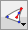

Dibujo de figuras propias con la herramienta Lápiz
 Utilice esta herramienta para crear figuras personalizadas. OmniGraffle incluye una gran variedad de figuras en el inspector "Líneas y figuras" y en los modelos, pero si quiere puede dibujarlas usted mismo.

Para empezar una nueva figura, haga clic en cualquier punto del lienzo. Cada clic que haga añadirá un nuevo punto a la figura, hasta que haga doble clic o pulse Retorno para fijar el punto final. Si en vez de hacer clic arrastra un punto cualquiera, éste se convertirá en un punto con marcas de selección de Bézier. Al crear una figura, puede pulsar Suprimir para eliminar el último punto que ha añadido.
Una vez que conozca su funcionamiento, las marcas de Bézier le permitirán dibujar cualquier figura que desee. Cada punto puede tener una marca orientada hacia el punto siguiente y otra orientada hacia el punto anterior. La línea entre dos puntos viene definida por la marca del primer punto que mira hacia delante y la marca del segundo punto que mira hacia atrás. Sin marcas de Bézier se obtiene una línea recta. Con marcas, la línea entre los dos puntos es una curva cuya forma depende de la longitud y la dirección de las marcas. Esta es una de esas operaciones que tienen mucho más sentido una vez que se han probado, así que le rogamos que lo haga. 
Tras crear una figura, puede seleccionarla con la herramienta Selección y editar sus puntos, ajustar las marcas de selección, añadir marcas a los puntos o cambiar los atributos de la figura mediante los inspectores Estilo y Propiedades.